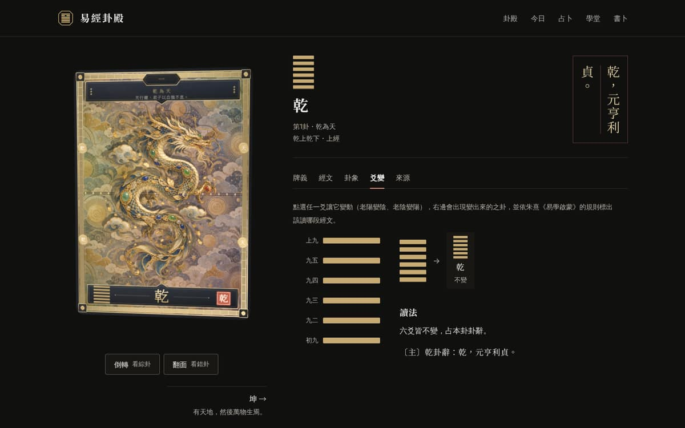
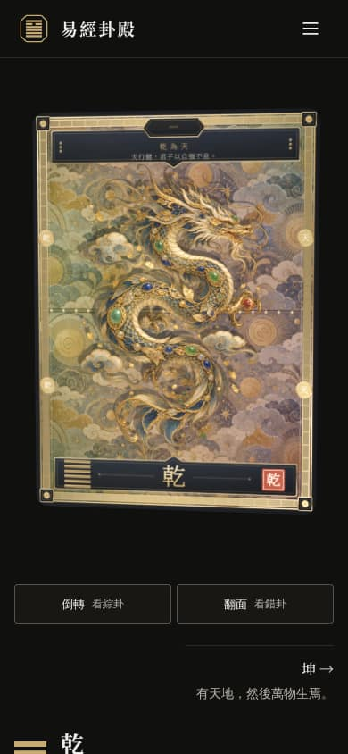
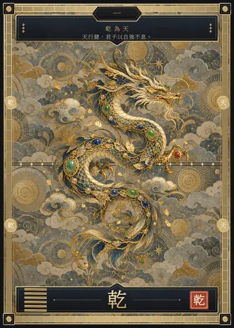
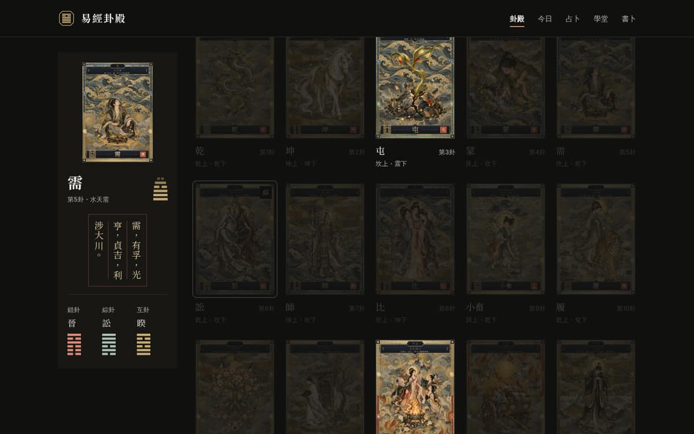
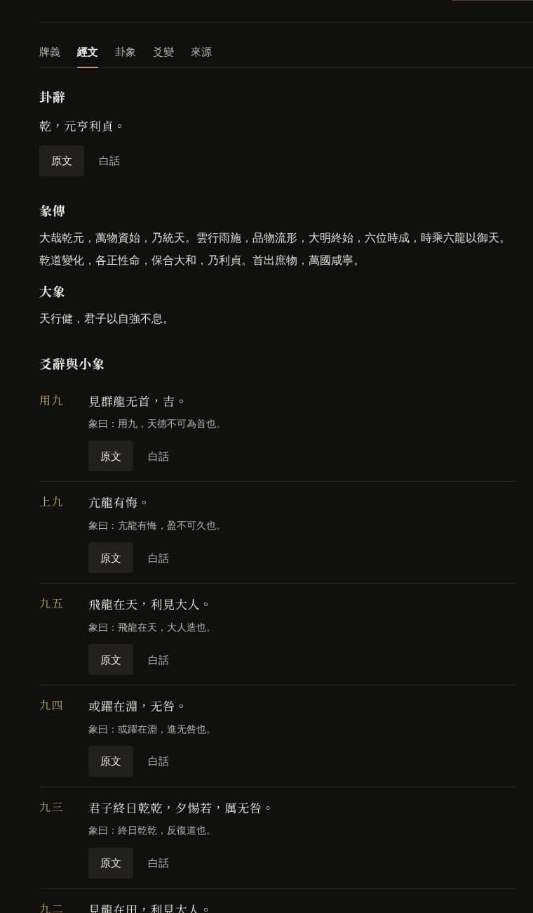
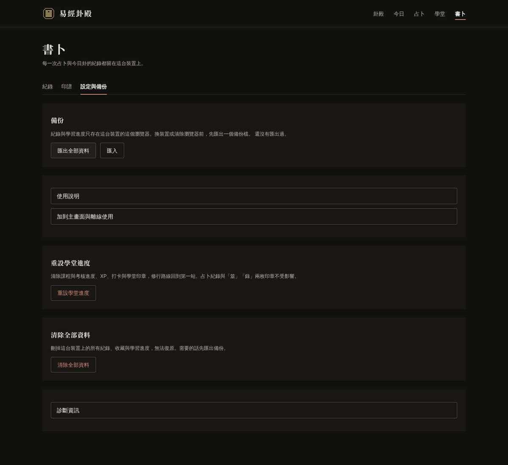
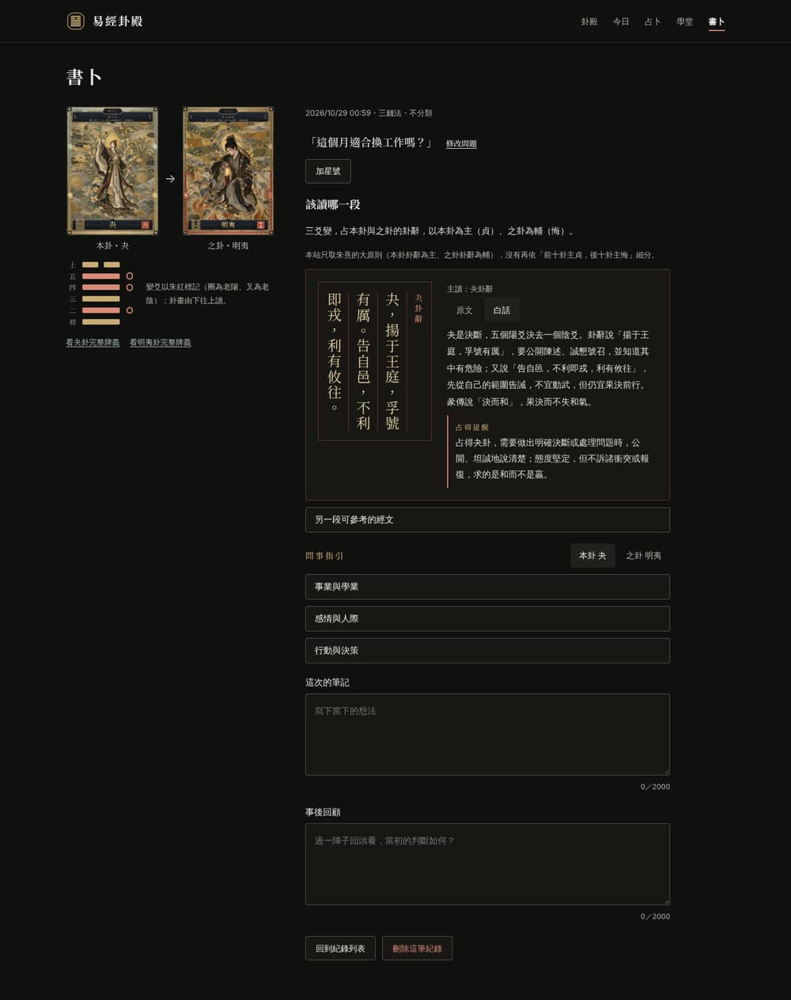
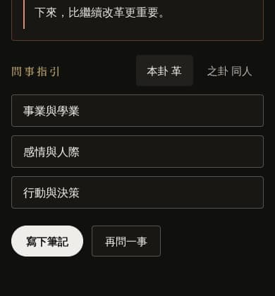
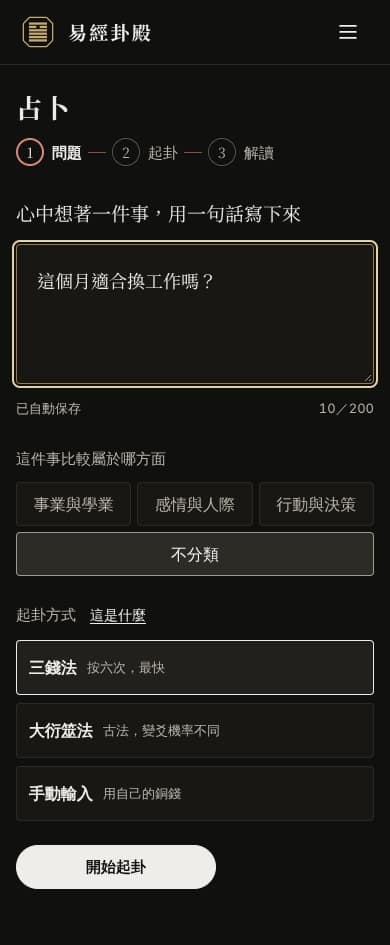
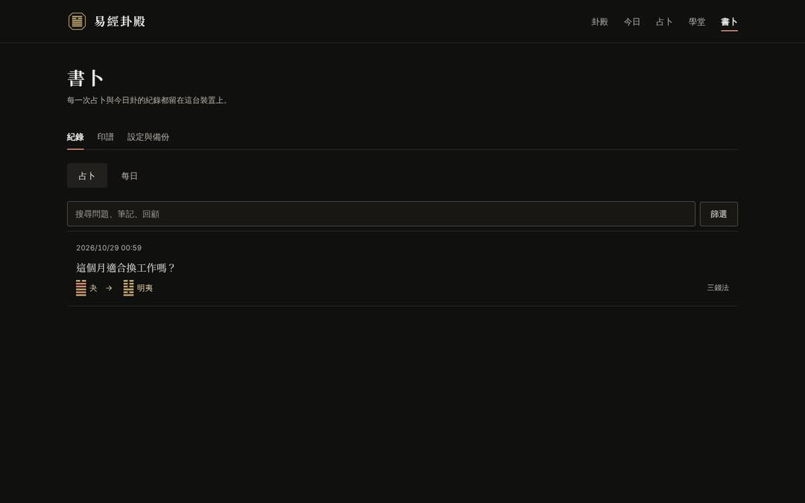

M1 爻變分頁換成爻位元件
左邊是舊式橫條，右邊又畫一次本卦。
改用與畫卦、起卦相同的爻位元件，點爻變朱紅；右邊只留之卦與讀法。
經冊與畫卦改版後的第一次全面檢視。整體已經站得住，下一步要補的是手機首屏、找卦效率、鍵盤與螢幕閱讀器的換頁體驗，以及只存在本機的資料要讓人安心。
標記：第一個是影響（高、中、低），第二個是工作量（小、中、大）。
| 編號 | 頁面 | 發現 | 證據 | 影響 | 工作量 |
|---|---|---|---|---|---|
| H1 | 卡牌（手機） | 首屏只有卡牌與兩顆按鈕；卦名落在 830px，卦辭與分頁在第二屏；序卦連結夾在卡牌與卦名之間。 | 390×844 截圖 | 高 | 小 |
| H2 | 卦殿 | 畫初九、六二後 16 卦符合，首屏只看得到 1 卦，最後一卦在 4462px。變淡在上下卦、八宮有意義（格位固定），在文王卦序只是讓人去找。 | Playwright 量測 | 高 | 中 |
| H3 | 全站 | 從導覽按 Enter 換頁後，焦點仍在導覽連結；從圖錄開卦牌後焦點掉到 body。螢幕閱讀器只會發現標題變了，聽不到新頁開始。 | 量測 activeElement | 高 | 小 |
| H4 | 書卜 | 紀錄只存在這個瀏覽器，但「還沒有匯出過」只是設定分頁裡的一行小字；從沒備份時，30 天提醒要從第一筆紀錄算起，之前沒有任何提示。 | 截圖、BackupReminder | 高 | 中 |
| H5 | 卡牌・經文 | 乾卦經文分頁有 8 組原文／白話切換，預設都是原文，要讀白話得點 8 次；爻名「九四」旁沒有位置提示。 | 計數 8 組 | 中 | 小 |
| M1 | 卡牌・爻變 | 仍用舊式橫條，旁邊又畫一次本卦，與卦殿畫卦、起卦的爻位元件不一致。 | 截圖 | 中 | 中 |
| M2 | 解讀、紀錄詳情 | 左欄在 640px 就結束，讀到問事指引時本卦與之卦已捲出畫面。 | 截圖 | 中 | 小 |
| M3 | 解讀 | 類別選「不分類」時，問事指引是三個收合框，要點三次。 | 手機截圖 | 中 | 小 |
| M4 | 占卜（手機） | 類別按鈕排成 3＋1，「不分類」獨占一整行，看起來像另一種東西。 | 手機截圖 | 低 | 小 |
| M5 | 書卜・設定 | 五塊同權面板，其中一塊沒有標題；「清除全部資料」與「匯出」長得一樣重。 | 截圖 | 中 | 小 |
| M6 | 書卜・紀錄 | 紀錄少時首屏大半空白；列表只有日期、問題、卦名，看不出當時讀的是哪一句。 | 截圖 | 低 | 中 |
| M7 | 全站 | 沒有頁尾；使用說明只在設定分頁的收合框，經文底本與插圖來源只在卡牌頁的「來源」分頁。 | 走查 | 中 | 小 |
| M8 | 卡牌、占卜 | axe：分頁內的 h3 直接接在 h1 之後（heading-order）；問題步驟的 aside 包在 section 裡（landmark-complementary-is-top-level）。 | axe-core | 中 | 小 |
| L1 | 404 | 只有「回到卦殿」，可以直接放搜尋框或畫卦入口。 | 截圖 | 低 | 小 |
| L2 | 全站 | 延遲載入時只有一行置中的「載入中…」。 | Layout.tsx | 低 | 小 |
| L3 | 全站 | 每次換頁都重播 0.62 秒的上升進場（四層，最後一層延遲 0.21 秒），卦殿與卡牌來回時會重複看到。 | global.css | 低 | 小 |
| L4 | 課程 | 作答只能點選或用 Tab；可加數字鍵 1 到 4 選答、Enter 檢查。 | 走查 | 低 | 小 |
卡牌是這一頁的主角，但手機首屏只剩卡牌時，使用者要先往下捲才知道這是哪一卦、怎麼讀。把卡牌縮到約一半高度，讓卦名、直排卦辭與分頁列都在首屏。
現況 390×844

提案 390×844・

乾是六爻皆陽的純陽之卦，象徵源源不絕的創造力與開拓的時機，整體通達向上。
序卦的上一卦／下一卦移到頁尾。
「卦名接在卡下」保留全息卡的份量，適合以卡牌為主的使用者；「卡與卦名並排」首屏多出牌義第一句，但全息卡要點「放大」才看得清楚。建議前者。
畫卦的價值是「縮小範圍」。文王卦序與十二消息的位置沒有幾何意義，符合的卦應該直接聚在一起；上下卦與京房八宮的格位有意義，維持變淡。
現況 1440×900，畫初九、六二後捲到圖錄

提案 1200 寬・
由下而上點爻：點一下為陽，再點為陰，三點回到未定。
已畫 2 爻，符合 16 卦
只列符合全部符合的卦排在最前，其餘維持原順序並變淡。
「只列符合」最省捲動，16 卦兩列就看完；「符合的排前面」保留 64 卦的整體感，但改變了文王卦序，兩兩成對的關係會被打散。建議前者，並在切回「全部」時恢復原順序。
這是單頁應用常見的缺口：網址與標題換了，鍵盤焦點與螢幕閱讀器卻還停在上一頁的位置。改法很小，影響每一次換頁。
改動集中在 Layout 一處，所有頁面一起受益；和 WCAG 2.4.3（焦點順序）與 4.1.3（狀態訊息）有關。
經文分頁是讀經的主要地方。白話一條一條點開很累；用一個記得住的總開關，每爻旁邊再畫出它在卦裡的位置。
現況 乾卦經文分頁（截取）

提案 760 寬，已切到「全部顯示」
乾卦六爻皆陽，象徵天的剛健運行。卦辭只有「元亨利貞」四字，通行的白話解為開創、通達、適宜、正固；彖傳說「大哉乾元，萬物資始」，把乾看成萬物生發的源頭，並強調順著時機各正其位。
龍飛得太高，到了極點便會有悔恨。上九位在卦的最上，剛強過頭而不知節制，小象說「盈不可久也」，滿了就難以長久。
占得提醒留意自己是否過度擴張、太過自信或聽不進勸告；適時減速、交棒或留些餘地。
龍飛上天，是乾卦最得時的一爻，九五剛健中正，能力與位置相配。此時適合發揮影響力，也適合與志同道合的人相見共事。
九四已進入上卦，龍或許躍起，或許仍留在深淵，進退都還在斟酌。只要審時度勢，往前一試也沒有過失。
全部顯示時頁面變長約一倍；所以預設仍是「只看原文」，第一次切到「全部顯示」後記住。白話是按需載入的 lines.json，總開關打開時才載入，首屏體積不變。
網站沒有帳號，紀錄只在這個瀏覽器裡。這件事應該在書卜頁一眼可見，備份要比清除更容易找到，說明與來源要有固定的出口。
現況 設定與備份

提案 1200 寬
上次匯出：尚未紀錄與學習進度只存在這台裝置的這個瀏覽器。換裝置或清除瀏覽器前，先匯出一個備份檔。
匯出全部資料匯入重設學堂進度清除課程與考核進度、XP、打卡與學堂印章；占卜紀錄與「筮」「錄」兩枚印章不受影響。
重設學堂進度清除全部資料刪掉這台裝置上的所有紀錄、收藏與學習進度。需要的話先匯出備份。
清除全部資料不加帳號或雲端同步；狀態列只放能從本機資料算出的數字。現有的 30 天提醒保留，只是把「從未備份」也納入。
工作量小、各自獨立，可以穿插在上面五項之間做。

左邊是舊式橫條，右邊又畫一次本卦。
改用與畫卦、起卦相同的爻位元件，點爻變朱紅；右邊只留之卦與讀法。

左欄在 640px 結束，右欄長到 1800px。
桌機左欄（兩張卡與卦畫）改為 sticky，讀問事指引時仍看得到本卦與之卦。

三個收合框要點三次。
不分類時改成一段三項的定義清單；選了類別時維持現在的「該面向展開＋看其他面向」。

3＋1 讓「不分類」看起來像另一類東西。
600px 以下四個類別固定兩欄。

列表看不出當時讀的是哪一句經文。
每列加一行主讀出處（例：夬卦辭、革上六）；紀錄少於 5 則時下方接「再問一事」。
卡牌頁分頁內的 h3 直接接在 h1 之後；問題步驟的 aside 包在 section 裡。
分頁內標題改為 h2（樣式不變）；問題步驟的 aside 改為 div 並加 aria-label。
只有「回到卦殿」。
放卦名搜尋框，輸入後直接到那一卦。
延遲載入只有「載入中…」；每次換頁都重播上升進場。
載入時顯示頁面標題與空的爻位；同一次瀏覽中再進同一頁只淡入、不位移。
作答只能點選或用 Tab。
數字鍵 1 到 4 選答、Enter 檢查與下一步，畫面上標出鍵位。
每一批照專案規則：先改 docs/spec.md，再實作；npm test、typecheck、build、375 與 1280px 實測都過才算完成。
工作量小、影響大
需要改規格
體驗加分